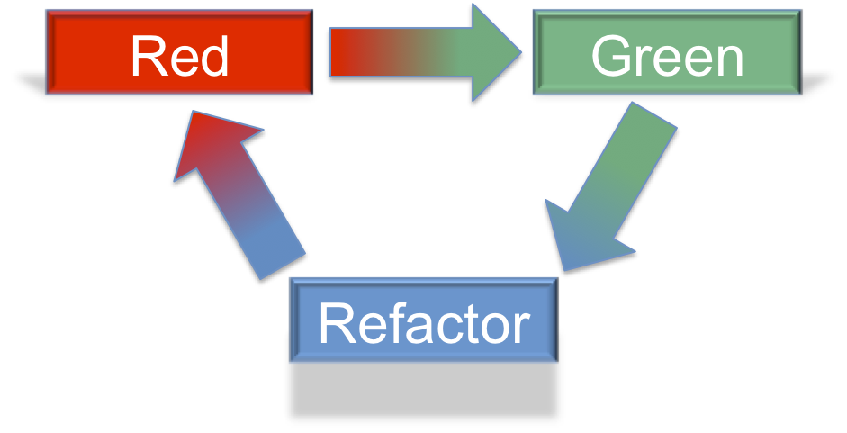

20.7. The Red, Green, Refactor Methodology¶
While adding new features and making our code work is the main goal, we also want to write readable, efficient code that makes us proud.
While working from a TDD point of view, the red, green, refactor methodology can help you break down your process into three stages. The red, green, refactor methodology describes the process of writing tests, seeing them pass, and then making the code better. As the name suggests, the cycle consists of three stages. Red refers to test results that fail, while green represents tests that pass. The colors refer to test results which are often styled with red for failing tests and green for passing tests in many IDEs.
Red -> Write a failing test.
Green -> Make it pass by implementing the code.
Refactor -> Make the code better.
Red, green, refactor cycle.¶
Refactoring code means to keep the same overall feature, but change how that feature is implemented. Since we have a test to verify our code, we can change the code with confidence, knowing that any error will be immediately identified by the test. Here are a few examples of refactoring:
- Using different data structures,
- Reducing the number of times needed to loop through an array,
- Moving duplicate logic into a function so it can be reused.
The refactor is also done in a TDD process:
- Decide how to improve the implementation of the feature,
- Change the unit test to use this new idea,
- Run the code to see the test fail,
- Refactor the code to implement the new idea,
- Finally, see the test pass with the refactored design.
You might not always need to refactor, but it is always something to consider. The red, green, refactor methodology is a cycle for improvement. Look at some of your earlier codebases you created in this class. From where you are now, are there any you would refactor?
Refactoring, and the red and green stages are also useful when updating old code.
And with that, let’s move on to the exercises and studio.